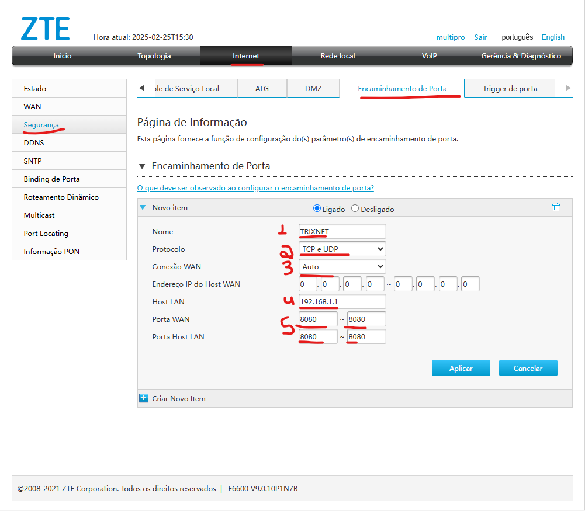
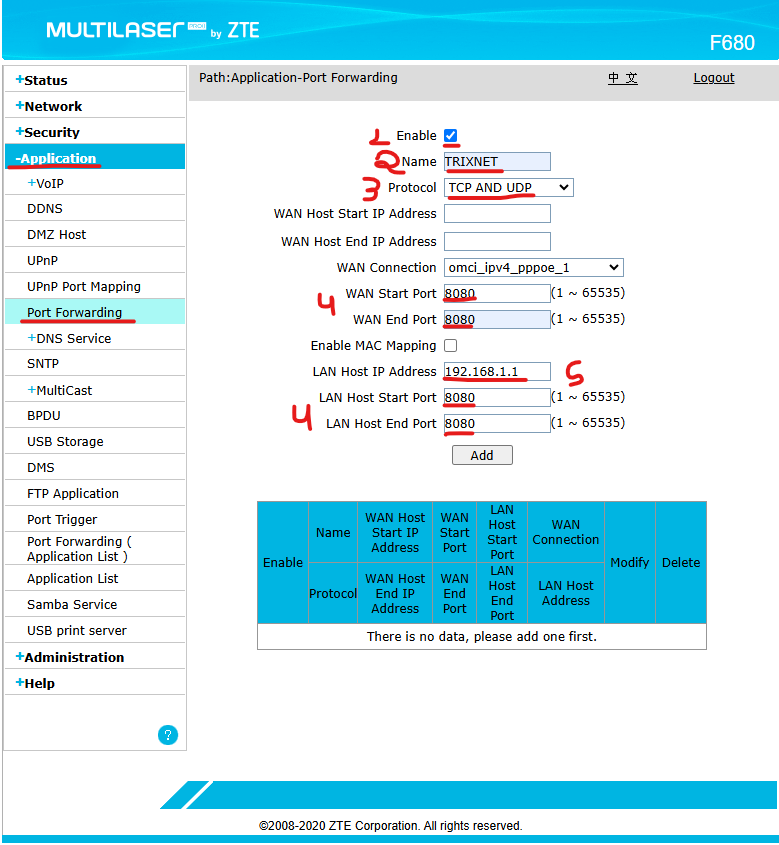

Redirecionamento de Porta - CAT | TrixNet
Oque é um Redirecionamento de porta ?
O redirecionamento de porta (ou port forwarding) é uma técnica usada para permitir que conexões externas alcancem um dispositivo dentro de uma rede local. Ele funciona configurando um roteador ou firewall para encaminhar pacotes que chegam em uma porta específica para um IP e porta dentro da rede.
Passo a passo de como acessar o Redirecionamento de porta F6600 (Interface cinza)
Para acessar a aba de Red. de porta na ONU cinza, segue abaixo:
1. Entrar em Internet>Segurança>Encaminhamento de Porta
Na opção 1: Nome do redirecionamento de porta
Na opção 2: Deixa como TCP e UDP (para trabalhar nos dois protocolos)
Na opção 3: Sempre deixar em Auto para pegar automaticamente a discagem WAN
Na opção 4: IP Lan do dispositivo local que vai receber a porta
Na opção 5: A porta informada nos quatro campos
Passo a passo de como acessar o Redirecionamento de porta F680 (Interface azul)
Para acessar a aba de Red. de porta na ONU azul, segue abaixo:
1. Entrar em Application>Port Forwarding
Na opção 1: Ativar a abertura de porta
Na opção 2: Nome do redirecionamento de porta
Na opção 3: Deixa como TCP e UDP (para trabalhar nos dois protocolos)
Na opção 4: A porta informada nos quatro campos
Na opção 5: IP Lan do dispositivo local que vai receber a porta
⚠️ Importante
O assinante precisa informar para qual IP e qual porta ele quer realizar o redirecionamento.
Oque são os protocolos UDP e TCP ?
UDP é:
O UDP (User Datagram Protocol) é um protocolo de comunicação da camada de transporte do modelo OSI, usado para transmitir dados entre dispositivos em uma rede. Ele é uma alternativa ao TCP (Transmission Control Protocol)
TCP é:
O TCP (Transmission Control Protocol) é um protocolo da camada de transporte do modelo OSI, projetado para garantir a entrega confiável de dados entre dispositivos em uma rede. Ele é o protocolo mais usado na internet e é a base de serviços como navegação na web, e-mails e transferências de arquivos.
Port Check:
Port check é uma plataforma para checagem se a porta está aberta: Link de acesso
OBS: O port check, alem da porta estar aberta na ONU, precisa ter IP Publico, pois faz uma checagem de fora da rede e precisa também estar configurado no aparelho do assinante que recebeu a porta.